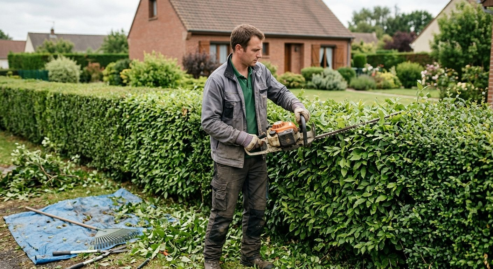
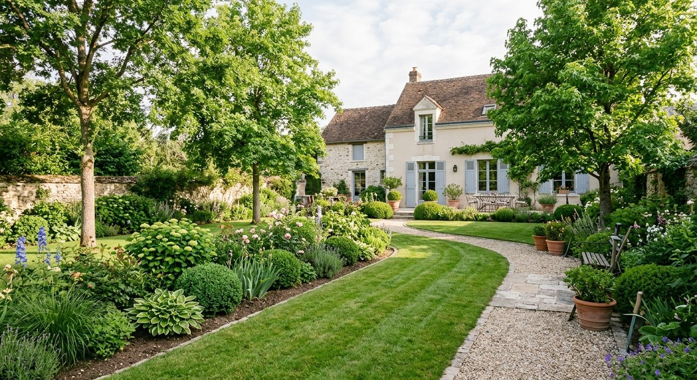
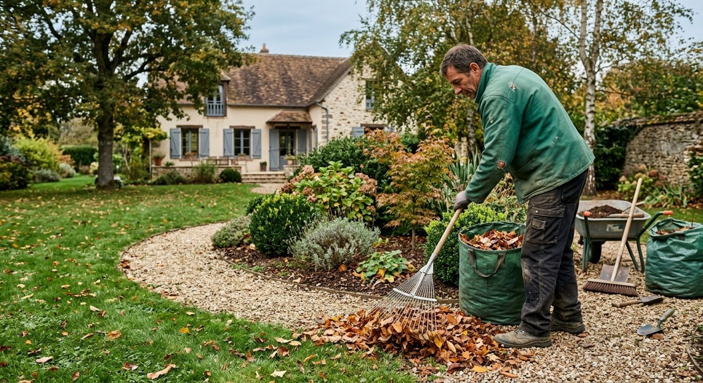
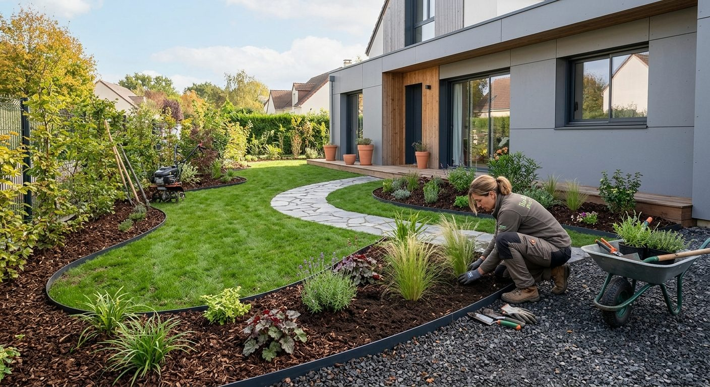
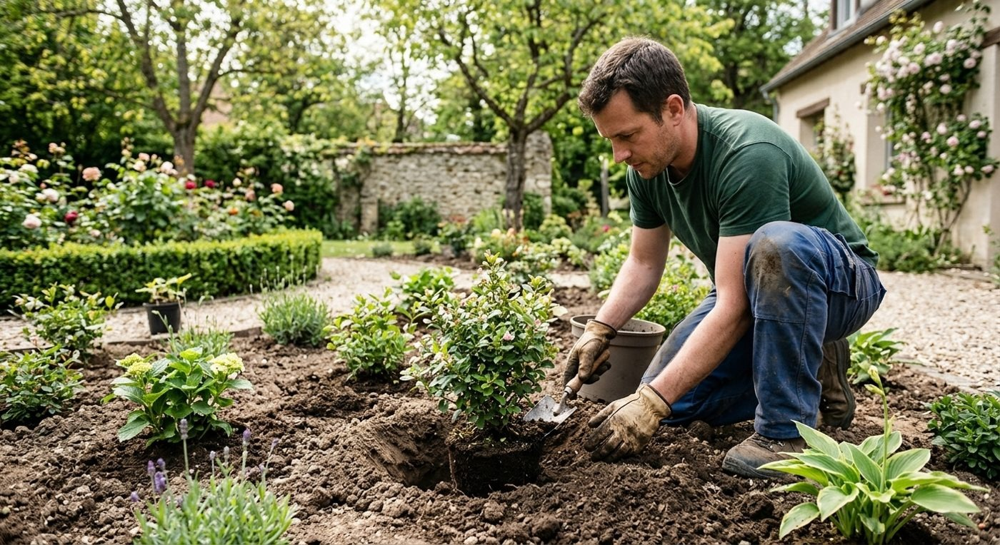
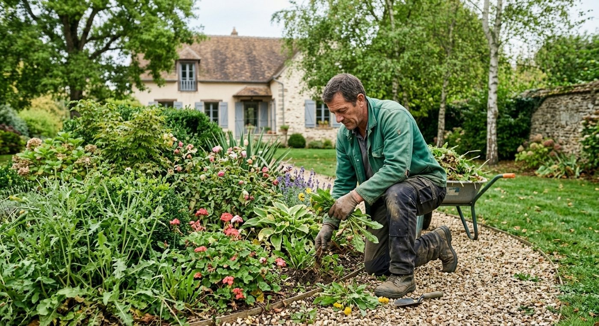
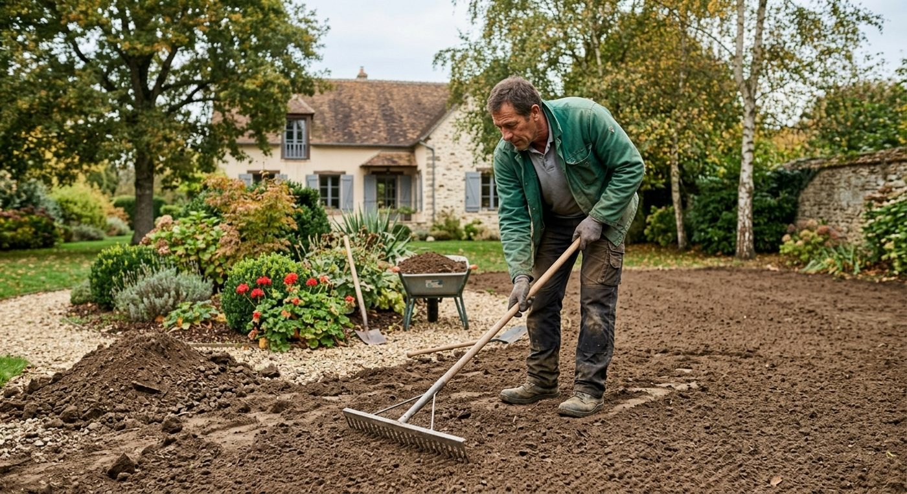
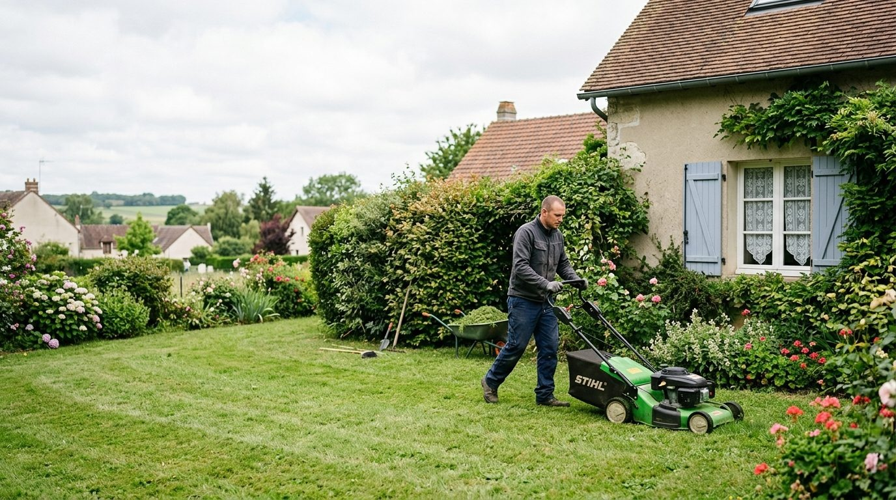
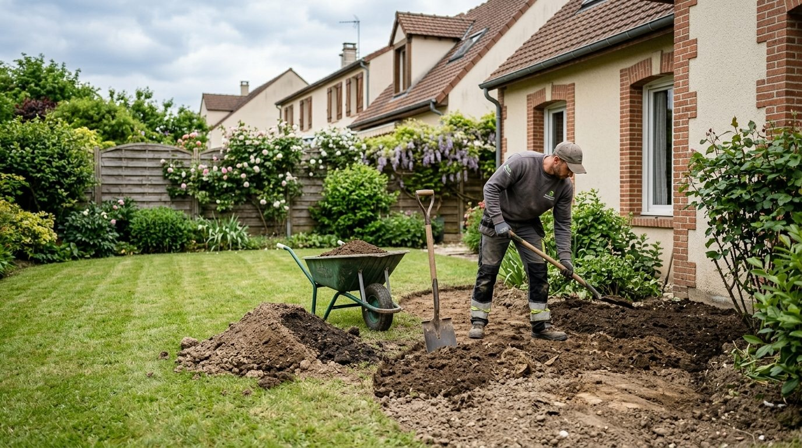

Réalisations
Des jardins aménagés et entretenus.
Neuf scènes de jardin : pelouses, haies, massifs et terrains en préparation.









Votre jardin
Et si le prochain, c'était le vôtre ?
Parlez de votre projet à A.R Paysage par téléphone.
06 99 20 18 49